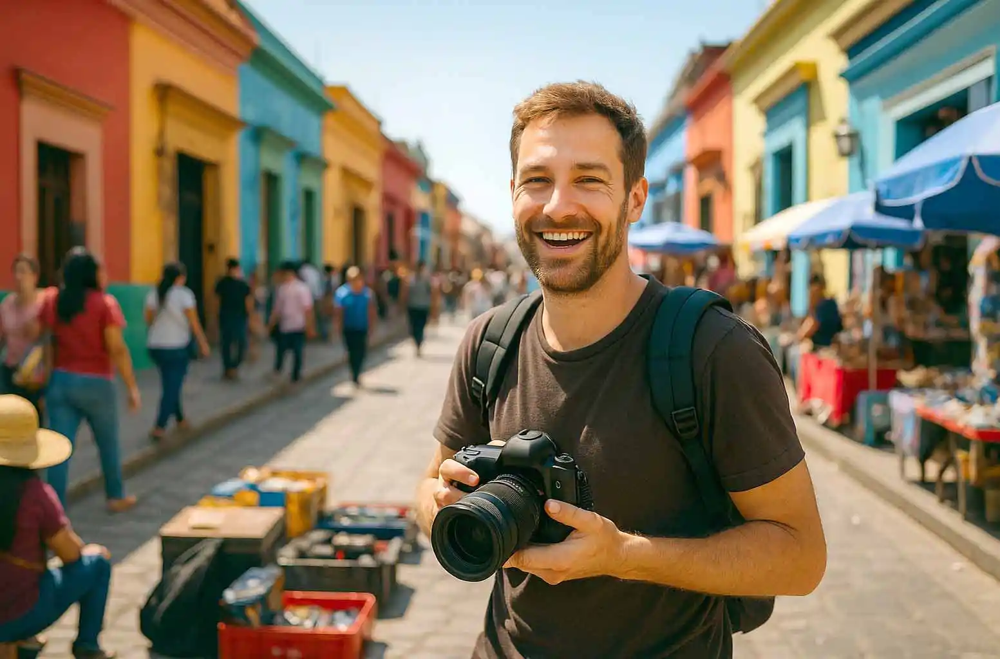

Reiseplanung für Kreative
TRAVEL, T10_L01
Wie professionelle Fotograf:innen Reisen strategisch planen – von Zeitpuffern über Equipment-Logistik bis zur mentalen Vorbereitung.

TRAVEL, T10_L01
Wie professionelle Fotograf:innen Reisen strategisch planen – von Zeitpuffern über Equipment-Logistik bis zur mentalen Vorbereitung.
TRAVEL, T10_L02
Flugzeug, Bahn oder Auto? Wie du das passende Transportmittel strategisch wählst – abhängig von Budget, Zeit, Teamgröße und Equipment. Warum die Anreise Teil des Jobs ist.
TRAVEL, T10_L03
Was professionelle Fotograf:innen immer im Handgepäck haben sollten – von Backup-Strategien bis zur mentalen Vorbereitung. Mehr als Kabel und Kameras.
TRAVEL, T10_L09
Warum Fotografie nicht erst am Set beginnt Wie du unterwegs deinen kreativen Blick schärfst und warum starke Bilder oft schon während der Reise entstehen – nicht erst am Ziel.
TRAVEL, T10_L06
Die Grenze als unsichtbare Schwelle. Wie du Visa- und Zollbestimmungen korrekt vorbereitest und Stress an Grenzen vermeidest, um internationale Shootings sicher durchzuführen.
T10_L05, TRAVEL
Warum die Reise schon im Studio beginnt. Wie du Equipment sicher verpackst, korrekt deklarierst und internationale Transporte professionell organisierst.
TRAVEL, T10_L07
Warum jedes Land ein anderes Set ist. Welche kulturellen Codes und Do’s & Don’ts du bei internationalen Shootings beachten solltest und wie Respekt Professionalität sichtbar macht.
T10_L04, TRAVEL
Warum Zeit dein unsichtbarer Gegner ist. Wie du Jetlag kontrollierst, deine Energie stabil hältst und trotz Zeitverschiebung professionell performst.
TRAVEL, T10_L08
Zwei Philosophien, ein Ziel. Wann es sinnvoll ist, minimal zu reisen und wann volles Equipment notwendig ist – und wie du je nach Auftrag strategisch entscheidest.
TRAVEL, T10_L12
Wie Reisen neue Perspektiven eröffnet und warum unbekannte Orte dein fotografisches Auge schärfen und deine Bildsprache erweitern. Warum dein Auge unterwegs anders sieht

TRAVEL, T10_L10
Wie du Team-Reisen professionell planst und warum Logistik, Kostenkontrolle und Gruppendynamik entscheidend für erfolgreiche Produktionen sind. Warum Reisen im Team eine eigene Disziplin ist
TRAVEL, T10_L11
Welche Kriterien bei Hotels und Unterkünften für Fotografen entscheidend sind und wie Standortwahl Leistung, Ablauf und Energie beeinflusst. Warum ein Bett über den Erfolg eines Shootings entscheidet
TRAVEL, T10_L13
Wie du mit klaren Notfallplänen auf Reisen auf Flugausfälle, verlorenes Gepäck oder Zeitverschiebungen professionell reagierst. Warum Chaos kein Zufall ist
TRAVEL, T10_L14
Wie nachhaltiges Reisen in der Fotoindustrie funktioniert und warum bewusste Entscheidungen ökologische Verantwortung und Professionalität verbinden. Zwischen Flugticket und Verantwortung
TRAVEL, T10_L15
Warum Gelassenheit auf Reisen die wichtigste Ressource für Fotografen ist und wie mentale Stabilität internationale Produktionen absichert.
Travel macht dich nicht nur organisierter.
Es macht dich souveräner.
Jede Reise hat ein Ziel – im Bereich LOCATION lernst du, wie du Orte strategisch bewertest, Licht analysierst und Räume als aktiven Teil deiner Bildsprache einsetzt.
Sobald Equipment und Team unterwegs sind, steigen Risiken – im Bereich INSURANCE erfährst du, wie du Transport, Haftung und Produktionsausfälle professionell absicherst.
Reisen beginnt beim Packen – im Bereich EQUIPMENT geht es darum, Ausrüstung strategisch zu planen, effizient zu transportieren und Ausfälle zu vermeiden.
Reiselogistik für professionelle Fotoproduktionen – von Pufferzeit bis Zoll.
Travel macht dich nicht nur organisierter.
Es macht dich souveräner.
Jede Reise hat ein Ziel – im Bereich LOCATION lernst du, wie du Orte strategisch bewertest, Licht analysierst und Räume als aktiven Teil deiner Bildsprache einsetzt.
Sobald Equipment und Team unterwegs sind, steigen Risiken – im Bereich INSURANCE erfährst du, wie du Transport, Haftung und Produktionsausfälle professionell absicherst.
Reisen beginnt beim Packen – im Bereich EQUIPMENT geht es darum, Ausrüstung strategisch zu planen, effizient zu transportieren und Ausfälle zu vermeiden.